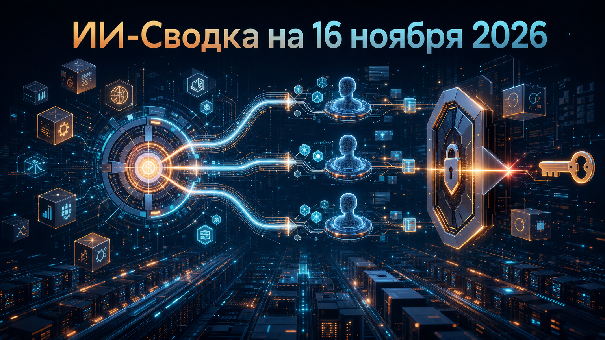

Новостей сегодня меньше, чем обычно
Сегодня в фокусе — обновление среды агентной разработки Google Antigravity CLI. Релиз показывает, что инструменты для программирования движутся от одиночного диалога с моделью к воспроизводимым процессам с несколькими субагентами, централизованными политиками и более строгой защитой интеграций.
Для команд это означает, что скорость параллельной работы агентов всё теснее связана с качеством оркестрации, контролем расширений и безопасностью доступа к внешним инструментам.
Google выпустила Antigravity CLI 1.5.9. Согласно описанию релиза Havoptic, в инструменте появился runworkflow: агент может создавать и исполнять Python-workflow для последовательного или параллельного запуска субагентов со структурированной передачей результатов. Python поставляется вместе с CLI, поэтому сценарий не требует отдельной установки среды исполнения.
Релиз также добавляет управляемые ограничения для плагинов — pluginsDisabled и marketplaceDisabled — и исправляет риск в HTTP MCP-интеграциях: пользовательские заголовки, включая API-ключи, не должны пересылаться на другой хост при перенаправлении. Практический смысл обновления — команды могут формализовать многошаговые агентные процессы, но должны относиться к workflow как к исполняемому коду: задавать границы полномочий субагентов, проверять плагины и изолировать секреты.